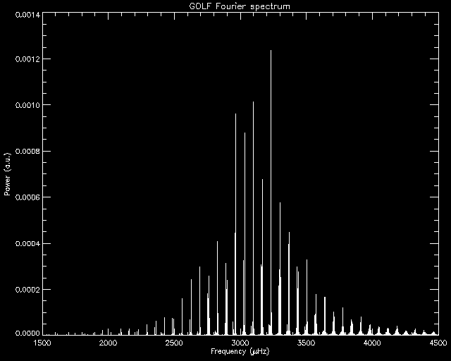
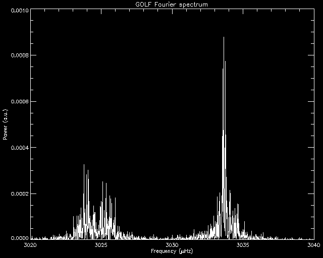
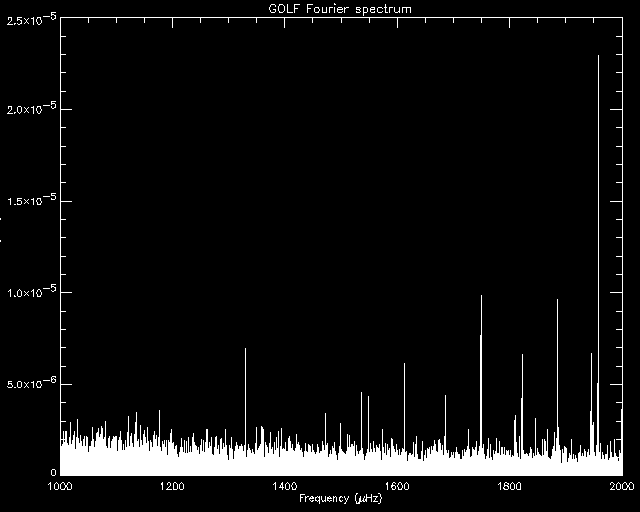

Results and Gallery - Spectra
-
The p-mode Fourier spectrum from GOLF, using a 690-day time series of calibrated velocity signal, which exhibits an excellent signal to noise ratio:
 -
Just a slice (a l=2 and a l=0 mode) from above spectrum, showing the complicated structures of the modes due to stochastic excitation (hiding their fine structure due to the Sun's rotation despite the excellent frequency resolution of 17nHz):
 -
The low-frequency range of the p modes from above spectrum, showing low-n order modes:
